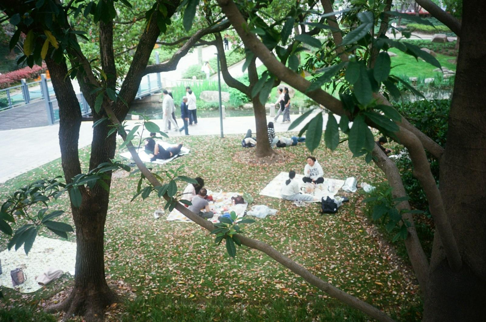

Our shared conviction
Freedom, with the
means to use it.
Liberal in our values. Progressive in our purpose.

New Progressive Party / 2072
An open society.
A fairer everyday life.
You should be free to live as yourself — and have the care, education and security to make that freedom real.
We are Caprica’s centre-left liberal party. We believe strong public services, free institutions and a fair economy belong together.
Since 2068, the NPP has been in opposition. In 2072, we are asking for a mandate to change course: limit secret state power, protect workers’ rights and freedom of association, and strengthen our place in the Columbian Union.
That means a government you can question. A home you can afford. A community you can count on. And a future in which progress reaches everyone.
Read our 2072 programmeRoom to be yourself.
Equal rights, privacy and an independent press.
Someone in your corner.
Public care, good schools and security through change.
A world to build together.
Clean energy, discovery and international cooperation.